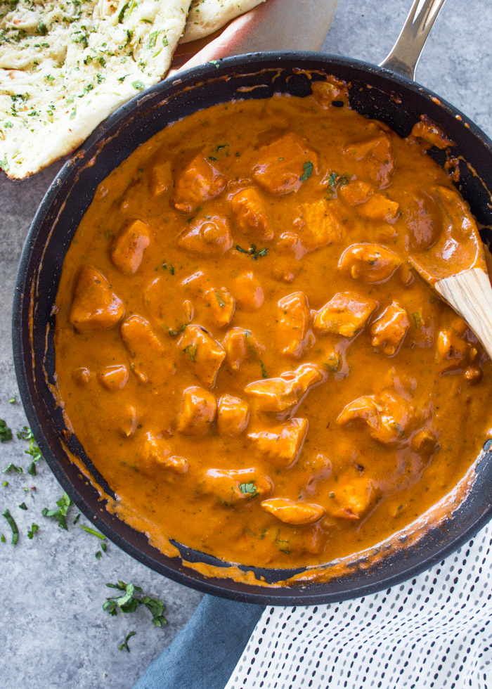

Chicken Butter

Chicken Butter Recipe
Butter Chicken is one of the most popular curries at any Indian restaurant around the world. Aromatic golden chicken pieces in an incredible creamy curry sauce, this Butter Chicken recipe is one of the best you will try.
Ingredients
- 1 tablespoon oil
- 1 tablespoon butter
- 1 medium onion diced
- 1 teaspoon fresh ginger finely minced or grated (or use paste)
- 2-3 cloves garlic finely minced or crushed
- 1 1/2 pounds about 2-3 boneless, skinless chicken breasts, cut into 3/4-inch chunks
- 4 tablespoons tomato paste or 8 oz can of tomato sauce
- 1 tablespoon garam masala
- 1 teaspoon chili powder or paprika, adjust to taste
- 1 teaspoon Fenugreek I use powder, but seeds or mustard seeds can be used too
- 1 teaspoon cumin
- 1 tsp salt
- 1/4 tsp black pepper
- 1 cup heavy cream sub for half & half or yogurt for low fat
- Hot cooked rice and naan for serving
Steps
- Heat a large skillet or medium saucepan over medium-high heat. Add the oil, butter, and onions and cook onions down until lightly golden, about 3-4 minutes. Add ginger and garlic and let cook for 30 seconds, stirring so it does not burn.
- Add the chicken, tomato paste, and spices. Cook for 5-6 minutes or until everything is cooked through.
- Add the heavy cream and simmer for 8-10 minutes stirring occasionally. Serve over Basmati rice or with naan.